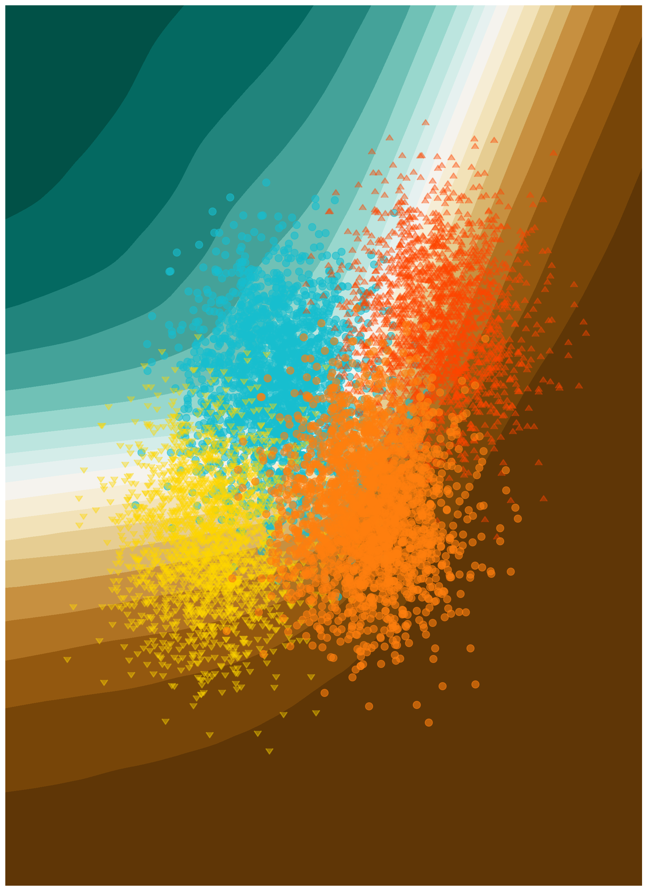

Data Analysis in High-Energy Physics as a Differentiable Program

Preface
“I didn’t have time to write a short
letterthesis, so I wrote a long one instead.” ― Mark Twain (adapted)
Many curious things can stem from direct messages on Twitter1. You can count the contents of this thesis as one of them.
In October of 2019, I got off the tram from the Blandonnet stop in Geneva, arriving bewildered to CERN for a 6 month placement. I had no idea what I was going to be doing there, since my assigned supervisor and I had not communicated at any point leading up to this visit. I just knew that I was doing this placement as part of my position, which was funded as part of a Marie Curie International Training Network (they let you do placements), and that my supervisor was in some way connected to the team working on the ROOT software suite.
Now, ROOT is sometimes talked about with a negative tone in high-energy physics circles due to it’s steep learning curve and monolithic software design. I will endeavour to do no such thing here, as this software was a revolution in computing for its time, and continues to power the majority of data analysis done at the Large Hadron Collider. However, this is specialist software, and it is very much the case that the typical undergraduate/masters student will likely have no training on how to use it, which can significantly hinder the ability to play with your code and understand what’s going on. Moreover, many courses at university will be teaching students to have proficiency with more standard scientific analysis tools, such as the scientific Python ecosystem. Being one of these people, I was keen to explore to what extent I could utilize these tools that I had some familiarity with in order to do my physics work. This led to me tweeting out the below, a mere two months before my placement:
pyhf is being used in a few on-going projects within ATLAS, also people like e.g. uproot for ntuple analysis. Complete end-to-end is difficult since reading xAOD in uproot natively isn't easy to achieve (also need C++ CP tools etc). I'm happy to help/collaborate!
— Lukas Heinrich ((lukasheinrich_?)) August 21, 2019
I enthusiastically followed up on Lukas’ offer to collaborate, and before I knew it, I was sat at a table in CERN’s main restaurant (R1 if you’re a cool kid) with both Lukas and my would-be supervisor (who would not be my supervisor), ready to start a project on building something that had never been done before, but using tools that I was familiar with. That project became neos, and started the development of a new paradigm for how we view optimizing our data analysis pipelines, and the cornerstone of this thesis – differentiable programming. Totally different from just a ROOT-less analysis, but I also did a bit of that in the end anyway.
As such, if you were expecting a typical HEP thesis, you may be surprised at what lies ahead, hopefully in a positive matter. We will still traverse the lands of particle physics, but will be stepping around many puddles that most dive into, and instead spend a bit of extra time in the marshlands of probability and statistics, which inform almost all of the work done in my PhD from a practical and motivational standpoint. From there, we’ll foray into the fields of gradients, including how we calculate them, why we care, and what they’re used for. There, we will meet the buzzwords that you may have come here for in the first place: machine learning and differentiable programming. Armed with these fundamentals, we will tackle my application of them to problems in collider physics, including optimizing summary statistics while being aware of uncertainty, interpolating between new physics models, and searching for new particles produced in association with a Higgs boson! (Maybe there’s puppies too. I don’t know. But don’t you want to find out?)
This whole thesis was created from markdown and executable code, thanks to the Quarto framework.
How to cite
There are a number of unreleased studies here (especially in Chapter 7) that may be of interest to cite. If you wish to do so, please use the following bibtex entry:
@phdthesis{Nathan-Simpson-Thesis,
abstract = {{Machine learning methods are now ubiquitous in physics, but often target objectives that are one or two steps removed from our physics goals. A prominent example of this is the discrimination between signal and background processes, which doesn’t account for the presence of systematic uncertainties – something crucial for the calculation of quantities such as the discovery significance and upper limits.<br/><br/>To combat this, this thesis shows that physics analysis workflows can be optimized in an end-to-end fashion, including the treatment of nuisance parameters that model systematic uncertainties, provided that the workflow is differentiable. By leveraging automatic differentiation and surrogates for non-differentiable operations, this work has made this possible for the first time, and demonstrates its use in a proof-of-concept scenario.<br/><br/>This thesis will motivate the use of end-to-end optimization as described above, cover the techniques that make it possible, and show recent developments in a high-energy physics context. Future directions that aim to scale and apply these methods will also be highlighted.<br/><br/>In addition to this, a method to interpolate between the signatures of new physics models is presented, which uses normalizing flows. The thesis then goes on to show the use of the technique in a search for a new scalar boson 𝑆 produced in association with a Higgs boson from a heavy new scalar 𝑋. There are also some contributions that interpolate between the event yields with Gaussian processes, and that show how we can use normalizing flows to construct a likelihood ratio-inspired observable.}},
author = {{Simpson, Nathan}},
isbn = {{978-91-8039-494-9}},
keywords = {{differentiable programming; machine learning; particle physics}},
language = {{eng}},
publisher = {{Lund University}},
school = {{Lund University}},
title = {{Data Analysis in High-Energy Physics as a Differentiable Program}},
url = {{http://dx.doi.org/10.5281/zenodo.7520315}},
doi = {{10.5281/zenodo.7520315}},
year = {{2023}},
}Citation needed, but not provided.↩︎